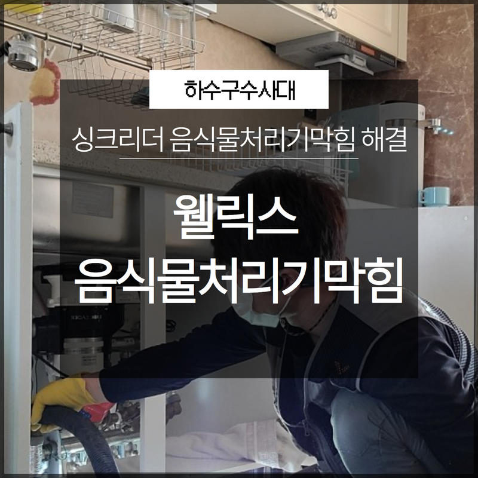
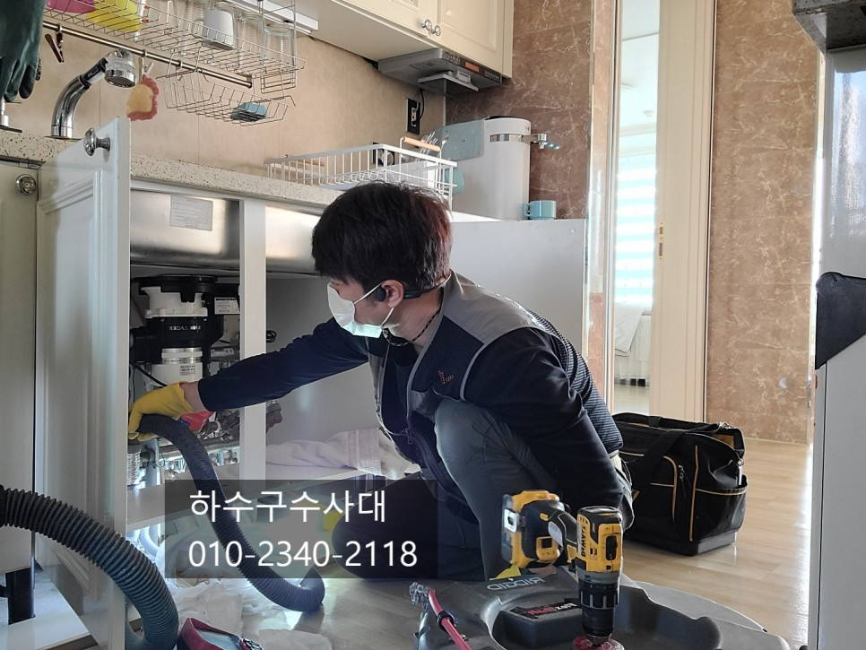
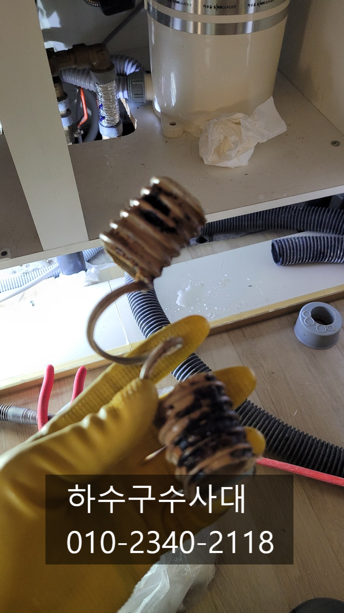
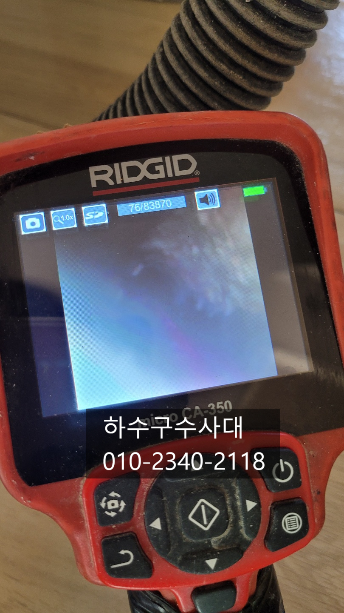
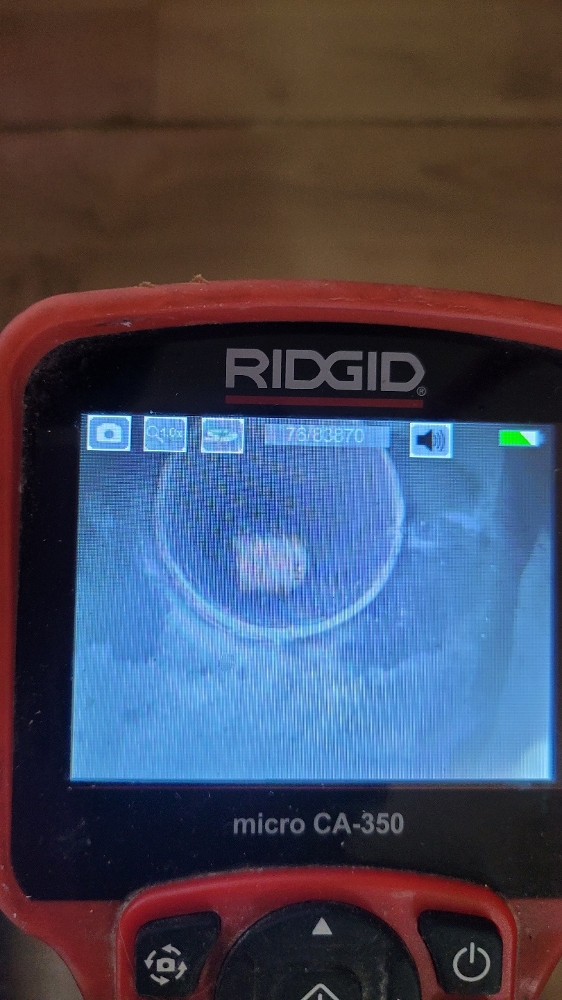
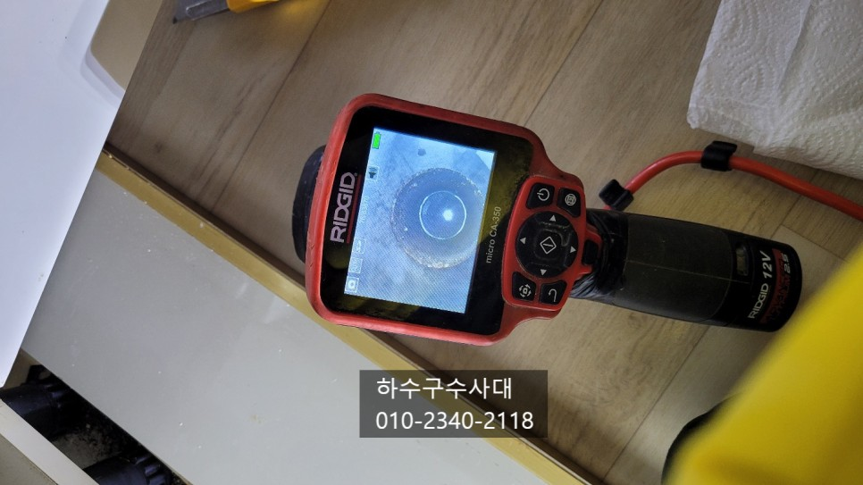

🏠 웰릭스 싱크리더 음식물처리기막힘 해결 완료
용인 싱크대막힘 전문 시공 후기

📋 작업 개요
- 위치: 용인
- 서비스 유형: 싱크대막힘, 하수구막힘, 배관막힘, 뚫는업체, 배관청소, 고압세척
- 작업 일시: 2022. 12. 31. 22:16
- 업체명: 하수구수사대 (010-5615-2118)
🔍 문제 상황
안녕하세요 하수구수사대입니다.
우리는 원활한 일상생활을 하면서 평소에 배관의 소중함을 잘 모르고 살아가는 경우가 많이 있습니다. 하지만 이렇게 원활하던 배관이 어느 날 갑자기 막히게 되는 경우에는 많이 당황스럽고 어떻게 해결을 해야 할지 모르는 경우가 생길 수 있습니다. 그래서 오늘은 웰릭스 싱크리더 음식물처리기막힘 해결 현장을 통해서 이렇게 배관의 막힘이 발생하게 되면 어떻게 해결을 해야 하는지 알려드리도록 하겠습니다.
이번에 의뢰를 받은 곳은 웰릭스 싱크리더 음식물처리기막힘 해결을 하기 위해서

🔎 원인 분석
💡 전문가 진단: 이번에 의뢰를 받은 곳은 웰릭스 싱크리더 음식물처리기막힘 해결을 하기 위해서
방문을 한 곳인데요 현장에 도착을 해서 직접 살펴보니 고객님께서도 많이 고생을 하신 흔적이 보이는 것 같았습니다. 고객님께서는 혼자서 해결을 해보시려고 음식물 분쇄기에서부터 연결 트랩에 있는 호스까지 모두 떼어내시고 세척을 해서 다시 장착해 두시기까지 하셨습니다.
사과를 많이 넣고 싱크대에 있는 음식물 처리기로 갈아서 내려보냈는데 그 후부터 갑자기 싱크대에서 물이 내려가지 않고 막혀 버리게 되었답니다. 고객님께서는 음식물 처리기 내부에서 막힘의 문제가 발생한 줄 알고 직접 분해해서 청소까지 해보았지만 물이 계속 안 내려갔다고 합니다. 이렇게 몇 시간이나 사투를 벌였지만 역시나 물은 내려가지 않았다고 합니다.
그러다 음식물 처리기가 고장인지 하수구가 막힌 건지를 알 수가 없어서 전문 업체에 의뢰를 하시게 되었습니다. 요즘은 각 가정에 음식물쓰레기 처리 장치를 설치하는 가정들이 많이 있는데요 간혹 음식물처리기막힘으로 인해서 급하게 의뢰를 해주시는 경우가 있습니다.

🔧 작업 과정
이런 경우에는 급한 마음에 혼자서 해결을 하시기보다는
전문 업체를 통해서 근본 원인을 해결하는 것이 필요하다고 할 수 있습니다. 그래야 차후에 또다시 막히는 일이 없이 해결이 가능하다고 할 수 있습니다. 현장에 도착해서 우선은 음식물 처리기의 내부에 있는 문제를 먼저 확인을 해보았는데요 음식물처리기막힘의 경우에는 하수구로 들어가는 주름 호스를 빼내어서 양동이를 받쳐두고 물을 내려보내주면 알 수 있습니다.
이때 음식물 분쇄기의 내부가 막혀있는 경우에는 물이 통하지 못하고 고여있는 상황이 되는 것입니다. 테스트를 해본 결과 음식물 처리기에는 물이 잘 통하는 것을 보니 문제가 없었는데요 이런 경우에는 싱크대에 있는 하수구의 막힘으로 인해서 물이 빠져나가지 못하는 것이라고 할 수 있습니다.
배관 내시경을 이용해서 다시 한번 배관의 내부를 살펴보았는데요
음식물 처리기로 사과를 한꺼번에 너무 많이 갈아서 내리다 보니 제대로 갈리지 못하고 하수구에 쌓이게 되면서 막히게 된 것이었습니다. 웰릭스 싱크리더 음식물 처리 기막힘 해결 이물질 제거를 하기 위해서 우선 석션 작업을 진행해 보았는데요 이물질을 회수하는 데에는 아주 좋은 장비라고 할 수 있습니다.


✅ 작업 완료
이 석션기는 전문가들이 사용하는 진공청소기라고 할 수 있는데요 물을 빨아낼 수 있는 청소기라고 할 수 있습니다. 모터의 힘도 강하기 때문에 싱크대의 하수구 막힘 정도는 무난하게 해결을 해 줄 수 있습니다. 석션 작업의 경우는 한 번만 진행을 하지는 않는데요 석션을 하고 따뜻한 물을 흘려보내면서 작업을 반복적으로 하게 되면 막힘을 뚫는 효과가 더욱 좋다고 할 수 있습니다.
따뜻한 물은 싱크대의 하수구 내부에 붙어서 흡착되어 있는 기름 슬러지와 기름때까지 말랑말랑하게 만들어주기 때문에 이물질들이 쉽게 떨어져 나올 수 있게 해줄 수 있습니다. 석션기를 이용해서 여러 번 작업을 진행하게 되니 어느 순간부터 더 이상 슬러지가 빨려 나오지 않는 것을 볼 수 있었습니다. 청소기로 빨려 나오는 공기에 흐름이 좋아지는 것을 볼 수 있었는데요 싱크대의 음식물 분쇄기 처리기 때문에 막혔던 증상이 사라지게 될 수 있었습니다.




⚠️ 주방 싱크대 배관 막힘 예방 수칙
- ✅ 기름기가 묻은 식기나 프라이팬은 설거지 전 키친타올로 반드시 기름때를 닦아내세요.
- ✅ 주기적으로 싱크대 개수대에 뜨거운 물을 가득 받아 한 번에 내려 배관 내부 기름을 씻어내세요.
- ✅ 배수구 거름망을 미세한 필터로 사용하시고 음식물 찌꺼기가 틈으로 새어 들지 않게 관리하세요.
- ✅ 베이킹소다와 식초를 뜨거운 물과 함께 일주일에 한 번씩 부어주면 배관 살균과 막힘 예방에 좋습니다.
💡 핵심 정리
- 확실한 장비 작업(내시경 점검 및 샤프트 스케일링)으로 원인을 뿌리 뽑습니다.
- 작업 후 1년 이내에 동일한 부위 재발 시 100% 무상 A/S 서비스를 보장합니다.
- 서울 · 경기 · 인천 전 지역에 24시간 언제든 긴급 출동할 수 있도록 항시 대기 중입니다.
❓ 자주 묻는 질문 (FAQ)
🚨 용인 싱크대막힘 문제로 고민이신가요?
정확한 원인 진단과 확실한 시공으로 재발 없는 해결을 약속드립니다.
24시간 긴급 출동 | 서울 · 경기 · 인천 전지역 | 1년 내 재발 시 무상 A/S